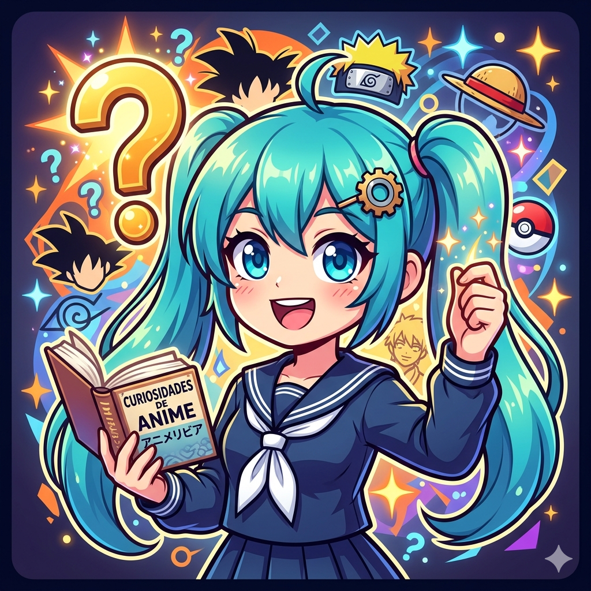
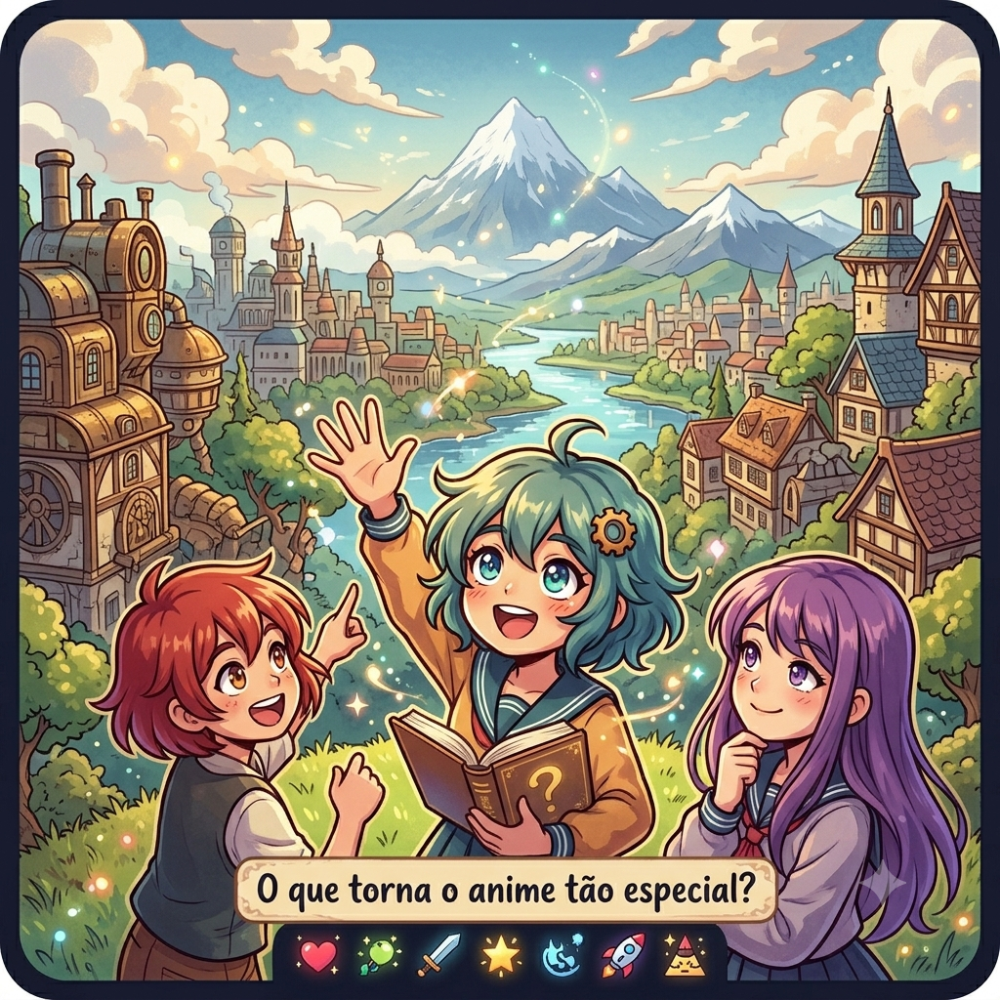
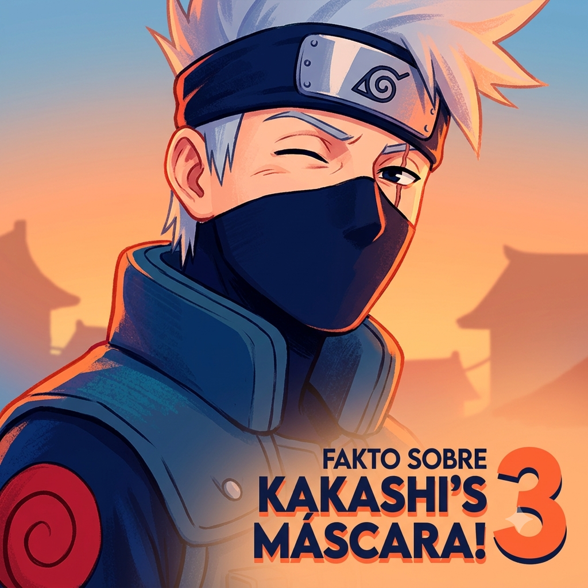

Meu primeiro post
Por: Isabelle Duenha
Boas-vindas ao meu novo blog! Aqui vou compartilhar curiosidades e novidades sobre animes e seus personagens.
Vou compartilhar conhecimentos sobre animes e personagens

Por: Isabelle Duenha
Boas-vindas ao meu novo blog! Aqui vou compartilhar curiosidades e novidades sobre animes e seus personagens.

Por: Isabelle Duenha
Não é só ação ou fantasia: são as histórias, os laços e os sentimentos que ficam com a gente. Cada obra traz lições, emoções e personagens que parecem fazer parte da nossa jornada.

Por: Isabelle Duenha
Você sabia que o criador de Naruto, Masashi Kishimoto, inicialmente não planejava que o Kakashi usasse uma máscara por mistério, mas sim porque achava que isso combinava com o visual de um ninja de elite? Com o tempo, ele percebeu que revelar o rosto do personagem seria um problema, já que a curiosidade dos fãs tinha crescido demais. Por causa disso, o mistério se tornou uma das piadas mais icônicas de toda a história dos animes!